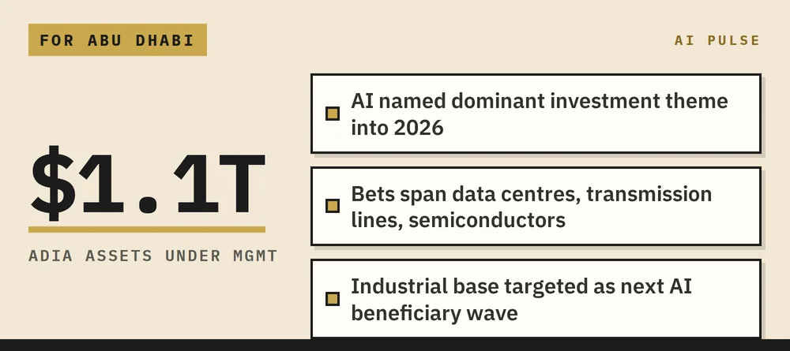
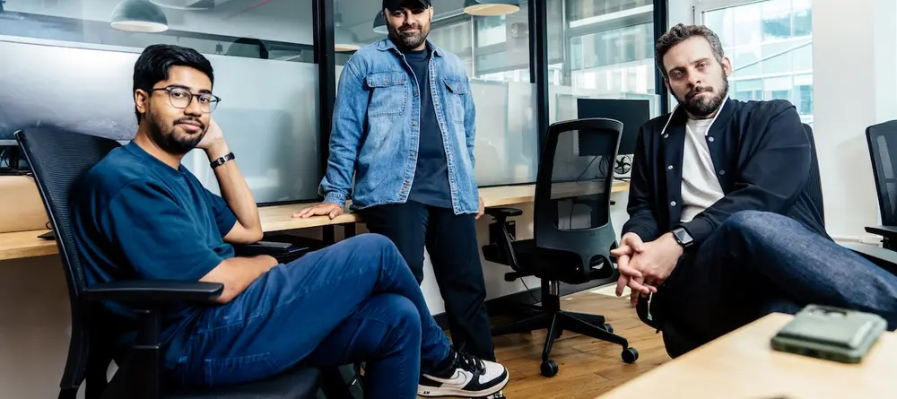
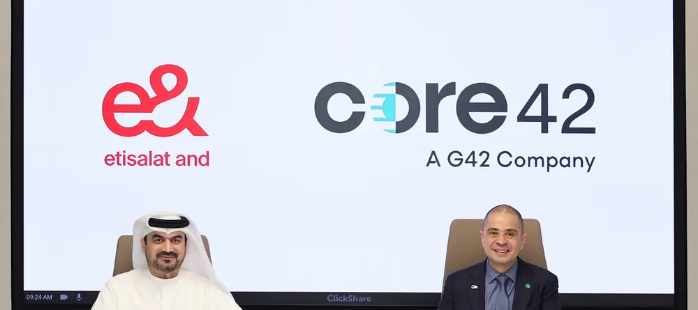
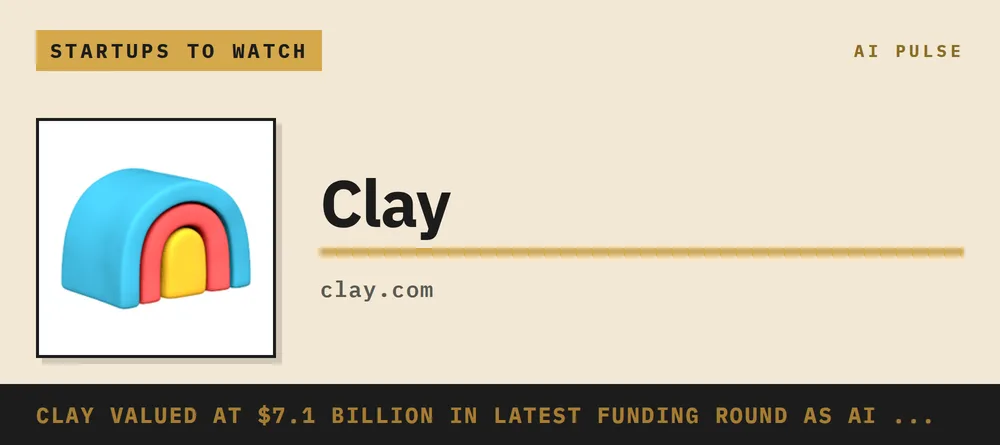
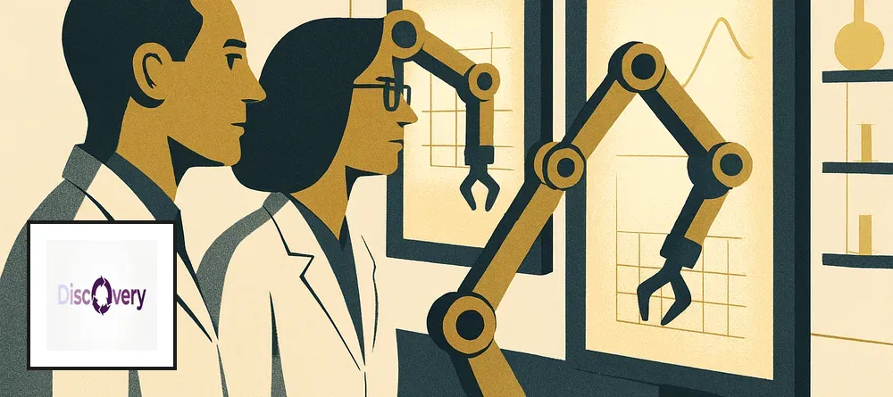

Abu Dhabi's G42 signed a raft of deals worth $14.3 billion with Greek public and private entities during Sheikh Khaled bin Mohamed's state visit, covering AI factories, cloud infrastructure, and smart-city services. Khazna Data Centres and Core42 will pursue a joint AI factory in Greece, while G42 subsidiary Presight will work with Greece's Ministry of Digital Governance on agentic AI for urban mobility, waste management, and water-network monitoring. G42 is effectively exporting Abu Dhabi's sovereign AI playbook — data centres, cloud, applied government AI — as a packaged offering to European states. For Gulf policymakers, it is a live template for how state-backed AI groups can deepen diplomatic ties through infrastructure.
The National (UAE)During Sheikh Khaled bin Mohamed's official visit to Athens in October 2026, G42 signed a package of agreements with Greek government ministries and private partners totalling roughly $14.3 billion — one of the largest AI infrastructure commitments a Gulf entity has made in Europe. At the centre is a plan by Khazna Data Centres and Core42 to develop an AI factory in Greece, combining physical data-centre capacity with cloud and high-performance compute. Separately, G42 subsidiary Presight signed a partnership with Greece's Ministry of Digital Governance to deploy agentic AI across urban mobility systems, waste management, and water-network monitoring — the same applied-AI use cases G42 has piloted in Abu Dhabi. The deal structure — a sovereign-linked anchor investor bringing compute, cloud, and ready-made AI applications into a partner country — is increasingly G42's signature model abroad. For Abu Dhabi, it signals that the Emirate's years of domestic AI infrastructure build-out are now generating exportable assets. The Greece deals will be watched closely by other European governments weighing sovereign AI partnerships with Gulf capital.
UAE capital is no longer flowing into AI as a passive bet on technology; it is becoming the structural funding layer that keeps the world's most important AI companies alive. OpenAI's $1.25 trillion round, G42's $14.3 billion Greece infrastructure push, and the sovereign fund concentration debate all point to the same underlying shift: Abu Dhabi has moved from AI consumer to AI creditor. The question is whether that position is being managed with the discipline it demands, or whether size alone is being mistaken for strategy.
The DeskThree stories this week, read separately, look like ordinary deal news. Read together, they describe a structural shift that most observers have not named yet.
OpenAI is closing a funding round that would value the company at $1.25 trillion — the largest private valuation in history — with UAE investors and Coatue leading up to $30 billion in new capital. Simultaneously, G42 is committing to $14.3 billion in AI infrastructure deals across Greece, signed during a state visit. And CNBC's Global SWF interview flags that Gulf sovereign funds now carry meaningful concentration risk from heavy AI exposure. These are not three separate stories. They are one story about what Abu Dhabi has quietly become: the world's AI financier of last resort.
The obvious read is that this is smart money following a megatrend. That read is incomplete, and dangerously so. Being the lead funder of OpenAI at a $1.25 trillion valuation — a company that has never turned an annual profit, is burning billions per quarter on compute, and is racing toward a speculative IPO — is not the same as holding a diversified technology portfolio. It is a concentrated, illiquid, pre-profit bet at a price that assumes the AI transition plays out on the most optimistic possible timeline. The Global SWF warning about concentration risk is not abstract; it is a direct read on this exact configuration of positions across MGX, Mubadala, and ADIA.
What most people are missing is the leverage question. When a sovereign fund is the lead in a round this size, and when the infrastructure buildout it is funding (OpenAI's compute, G42's data centres in Greece) is genuinely load-bearing for the companies involved, that is not passive investment — it is structural dependency. The companies need the Gulf more than the headline return figures suggest. That is a position of real power, and right now it is being used primarily to write larger cheques rather than to extract governance rights, board seats, preferred infrastructure reciprocity, or data access agreements that would compound the value over decades.
For Abu Dhabi specifically, the G42-Greece play is the more instructive model. Tying capital to infrastructure deployment — data centres, compute capacity, physical presence — converts financial exposure into geopolitical and operational footprint. That is replicable across Central Asia, Sub-Saharan Africa, and Southern Europe, where the demand for AI infrastructure is real and the supply of credible capital is thin. The OpenAI round, by contrast, is a financial instrument with limited operational levers attached.
The decision a senior principal should force now: for every major AI investment ticket above $1 billion, define what non-financial asset comes back — a data agreement, a compute allocation, a joint venture on model deployment in Arabic, a board seat. SpaceX closing a $40 billion debt deal for Nvidia GPUs, with investment-grade rating tied to Starlink revenue, is a useful structural template: capital tied to a specific operational outcome with a credible repayment mechanism. Gulf AI investment at this scale needs the same discipline. The window to negotiate those terms is open while the companies still need the money. It will not stay open past the IPO.
A former OpenAI research chief has raised $230 million at a $1.5 billion valuation to build Arda — an AI copilot for manufacturing engineers, doing for factory floors what Cursor does for coders. The round was led by Altimeter, Accel, and Khosla Ventures, with early engagement from defense firm Anduril already on the books. The bet is that the bottleneck in industrial revival is not capital or machines, but engineering intelligence at scale. If it works, AI becomes the decisive input in who manufactures what, and where.
CNBCBob McGrew, who led research at OpenAI before departing in 2024, has founded Arda with a clear thesis: manufacturing's real constraint is not machinery but the scarce, expensive knowledge of experienced engineers. Arda's software acts as an AI agent for those engineers — interpreting specs, flagging process decisions, and automating the cognitive work that typically bottlenecks production lines. The $230 million Series A, led by Altimeter Capital alongside Accel and Khosla Ventures, values the company at $1.5 billion before it has shipped at scale. An early engagement with Anduril, the defense-tech firm building autonomous weapons systems, signals where the first real revenue will come from. The broader context: the U.S. government is actively pushing domestic manufacturing capacity, and AI-native tools that can compress the time it takes to stand up a production line carry real strategic value. Abu Dhabi's own industrial ambitions — from aerospace to advanced manufacturing — make the Arda model worth watching closely.
AI is taking over the routine grind of customer service — note-taking, admin, repetitive queries — leaving human agents to handle the calls that actually need judgment. A credit-card agent interviewed by CNBC says she now spends significantly more time on each customer. The catch: when AI makes mistakes, it is the human who has to clean them up, and that friction is real. Employers are responding by ditching speed metrics in favour of outcome scores and sound judgment.
CNBCA CNBC investigation published in October 2026 puts real faces on the AI-in-the-workplace story, following frontline customer-service agents as their daily routines are rewritten by automation. Routine tasks — call notes, case admin, FAQ responses — are now largely handled by AI, and agents describe spending longer, more substantive time with each caller. The upside is real: more personalised interactions and, in early data, better customer outcomes. But workers are candid about the downside: AI errors that cascade into messy interactions they then have to salvage, often mid-call with a frustrated customer. Employers are beginning to respond structurally, moving performance dashboards away from calls-per-hour toward quality of resolution and quality of judgment — a significant shift in how millions of service workers will be hired, trained, and evaluated. For any government ministry or large enterprise running contact-centre operations, the question is no longer whether to deploy AI, but how fast to redesign the human role around it.
China's biggest tech companies — ByteDance, Alibaba, and Tencent — have placed roughly $35 billion in orders for Nvidia's RTX Pro 5500 GPUs, the most powerful chips Washington still allows them to buy. The problem: Nvidia can only ship around 5–10% of that. A $35 billion demand wall is meeting a supply trickle, exposing just how completely export controls have pinched China's access to frontier compute — even for the chips that are technically permitted.
The VergeNvidia has told customers it cannot come close to meeting China's demand for RTX Pro 5500 GPUs — the highest-spec chips still permitted under US export rules. Reuters reports that ByteDance, Alibaba, and Tencent together account for roughly $35 billion in orders, but production constraints mean Nvidia will likely deliver only 5–10% of that volume. The shortfall is not a policy decision: Washington has already drawn the line, and these chips sit on the permitted side of it. What's broken is the supply chain's ability to produce at the scale China needs. For the Gulf, the calculus sharpens: access to unrestricted, high-end Nvidia compute — the kind Abu Dhabi secured through its MGX and G42 relationships — is becoming a genuinely scarce asset globally, not just in sanctioned markets. The gap between what China can order and what it can receive may accelerate its push into domestic chip alternatives, but in the near term it simply means less AI capacity for the world's second-largest economy.
Two US senators — one Democrat, one Republican — have written to Google's Sundar Pichai demanding answers on how the company's AI tools are affecting children's mental health and learning outcomes in schools. The letter follows a Wall Street Journal investigation and signals that Washington's patience with untested AI in classrooms is running thin. The pressure could force Google to open its data on student impact — setting a precedent for what any government deploying AI in education will eventually have to prove.
Wall Street JournalSenators Richard Blumenthal and Josh Hawley sent a formal letter to Google CEO Sundar Pichai in October 2026, triggered by a Wall Street Journal investigation into Google's AI products in US schools. The senators are demanding detailed data on how those tools affect children's mental health, concentration, and educational development — and the bipartisan nature of the inquiry makes it harder to dismiss as partisan noise. Google's suite of classroom tools is used by tens of millions of students globally, meaning whatever disclosure or restrictions emerge from this inquiry will ripple well beyond the US. For governments in the Gulf and elsewhere that are actively deploying AI tutors and school-facing tools, the political lesson is clear: the question is not whether scrutiny will come, but whether you have the outcome data ready when it does. Building independent measurement of student impact from day one is no longer optional — it is political self-defence.
OpenAI is closing in on a funding round of up to $30 billion that would value it at $1.25 trillion — making it the most valuable private company in history. UAE investors are co-leading the round alongside Coatue, positioning the Gulf as a primary backer of the world's most consequential AI lab ahead of a likely IPO. The UAE's capital is now at the very centre of OpenAI's ownership structure, not on its periphery.
CNBCOpenAI is finalising a fundraise of up to $30 billion at a $1.25 trillion valuation — a figure that would make it the most highly valued private company ever and nearly double its last round price. UAE investors are co-leading alongside Coatue, cementing a pattern of Gulf sovereign and institutional capital anchoring OpenAI's biggest financing moments. The round is structured as a bridge to a potential IPO, giving early backers a liquidity path while OpenAI continues to burn through compute spending at scale. For Abu Dhabi, a co-lead position at this valuation is more than a financial bet: it buys influence, access, and potentially preferential deployment terms at a moment when OpenAI's models underpin AI strategies across governments worldwide. The round is described as near final, though no closing date has been confirmed. If it lands as reported, it will reset every benchmark for what a private technology company can be worth.
The U.S. Department of Homeland Security has issued a Federal Register notice ordering all federal agencies to remove DeepSeek products from their systems and blocking the Chinese AI firm from federal contracts entirely. The Trump administration cites national security risks tied to DeepSeek's China operations. The U.S. government has now drawn a hard line between allied and adversarial AI suppliers — and it is enforcing that line through procurement law, not just rhetoric.
BloombergThe U.S. Department of Homeland Security posted a Federal Register notice in October 2026 ordering every federal agency to strip DeepSeek products from its systems and barring the firm from future government contracts. The move is the most concrete enforcement action taken against a Chinese AI company at the federal level, going well beyond advisory warnings. The Trump administration's stated rationale is national security: DeepSeek, which stunned the AI world earlier this year with a capable low-cost model, operates under Chinese jurisdiction, raising data and access concerns. The action effectively treats AI model provenance the same way the U.S. has treated telecoms hardware — a supply-chain risk to be legislated out of government networks. For other governments watching, including in the Gulf, the DHS notice doubles as a policy template: identify the risk, publish a formal order, and enforce through contracting rules. Abu Dhabi's own sovereign AI strategy, built around controlled infrastructure and trusted partners, puts it in a strong position to apply similar logic to its own procurement frameworks.
Dessa is a conversational AI model built by Block (Jack Dorsey's company) trained entirely on human dialogue data. It focuses on naturalistic, back-and-forth conversation rather than task completion or information retrieval.
The VergeDessa is Block's entry into conversational AI, notable for being trained "from scratch on nothing but human conversation" — a deliberate departure from the instruction-tuned, assistant-brained models that dominate the space. The result is a model that feels less like a helpful chatbot and more like an unpredictable dialogue partner, complete with awkward moments and occasional identity mix-ups (it once misidentified a speaker as "Ronaldo"). Block has published sample conversations — including a voice-based guessing game — on Dessa's own site, inviting direct comparison with mainstream models. It's worth watching as a signal that major fintech/Web3 players are now building their own foundational AI, not just integrating others'.

The UAE is rolling out AI across hospitals and schools — X-ray readers, cardiac-scan analysis, a K-12 AI literacy curriculum — backed by a $3.54 billion national digital strategy. A data breach at a Dubai hospital that allegedly exposed 450 million patient records has sharpened the debate about whether the country's security posture is keeping pace with its adoption ambitions. The breach number alone should give any health-sector leader pause. Experts argue the real measure of success is trusted outcomes, not deployment speed.
The National (UAE)The UAE's AI push in health care and education is accelerating: Aster DM Healthcare is already using AI to read X-rays and assess cardiac scans, while the government is building a structured AI literacy framework from kindergarten through Grade 12, all underpinned by a $3.54 billion national digital strategy. But a serious vulnerability has surfaced alongside the ambition — a data breach at a Dubai hospital allegedly exposed 450 million patient records, one of the largest healthcare data incidents in the region's history. Cybersecurity experts cited in The National argue that the country's governance and data-protection frameworks need to scale as fast as the technology itself. The risk is not that AI is being deployed in hospitals and classrooms — it is that the infrastructure protecting the sensitive data those systems rely on has not kept up. The standard being proposed: measure AI success by improved, trusted outcomes, not by how quickly tools are switched on.
An Nvidia-backed Israeli startup called doubleAI has launched what it calls "code execution models" — AI that embeds itself inside running software, between the code and the chip, to shrink compute consumption rather than just help write code. The company, co-founded by Mobileye's Amnon Shashua and backed by Lightspeed and Bessemer, has raised $220 million. In early tests, one customer cut compute costs by 67%. With AI infrastructure bills becoming a board-level concern, a credible efficiency layer at this level of funding is worth tracking.
Wall Street JournaldoubleAI, founded in Tel Aviv, is pitching a new category of AI it calls "code execution models" — software that sits inside a running program, between the application layer and the silicon, and continuously optimises how compute is consumed. It is not a coding assistant; it is an efficiency layer baked into production environments. The company's co-founder, Amnon Shashua, is the CEO of Mobileye — a signal of serious technical pedigree — and has said he will step down from that role once a successor is named, suggesting doubleAI is his primary focus. Backers include Nvidia, Lightspeed, Bessemer, and Dell, and the company has raised $220 million in total. In early customer demonstrations, one deployment reportedly reduced compute costs by 67%. The claim has not been independently verified, but the combination of credible founders, tier-one investors, and a differentiated mechanism — rather than yet another model — puts this firmly on the radar for anyone watching where AI infrastructure is heading.

Microsoft's AI CEO Mustafa Suleiman unveiled Diagnostic Orchestrator, a clinical AI tool that the company claims diagnoses conditions up to **4x** more accurately than human doctors — with results published in a leading medical journal. The system is positioned as a step toward what Microsoft is calling "medical superintelligence," with human-level or better diagnostic performance projected within a few years. The bar for what a hospital system needs from a human specialist just got challenged in a peer-reviewed setting. Healthcare leaders and health ministries now face a concrete question about when, not whether, to integrate such tools.
The VergeMicrosoft's Diagnostic Orchestrator is an AI system designed to reason through complex patient presentations and arrive at a diagnosis — and in published trials, it outperformed human clinicians by a factor of up to four on accuracy. The results appeared in a leading medical journal, giving the claim more weight than a typical corporate announcement. Microsoft AI CEO Mustafa Suleiman framed it as a meaningful step toward "medical superintelligence" — a level of clinical reasoning that matches or exceeds the best specialists across a wide range of conditions. The system works as an orchestrator, meaning it coordinates multiple AI agents or data streams rather than functioning as a single model, which is what allows it to handle diagnostic complexity at scale. Debate remains open on safety thresholds, regulatory clearance, and how the tool integrates into live clinical workflows. For Gulf health authorities running large, centrally managed hospital networks — such as those under SEHA or the Ministry of Health — this is the kind of validated, system-level tool worth a formal evaluation now rather than later.
TikTok's U.S. data-security unit is quietly hunting for four gigawatts of compute capacity on American soil, with Oracle Cloud remaining its anchor provider while it shops for additional supply. The scale is striking — four gigawatts is a serious sovereign-grade number, not a startup order. The race to lock in gigawatts of AI compute has now reached consumer platforms, not just hyperscalers and governments, signalling just how tight the global supply picture has become.
CNBCTikTok's U.S. data-security division is in talks to secure as much as four gigawatts of computing power in the United States, according to CNBC sources. Oracle Cloud Infrastructure will stay on as TikTok's primary U.S. cloud provider, but the company is casting a wider net for additional capacity to support growing AI workloads. Four gigawatts is a number more commonly associated with national data-centre programmes than a single platform — for context, the UAE's entire announced AI compute ambition sits in a similar range. The move reflects a structural shift in the compute market: AI-ready infrastructure is now so scarce that even consumer platforms are making multi-year, multi-gigawatt bets to secure their place in the queue. For any government or sovereign fund planning data-centre capacity, TikTok's play is a clear signal that the window to lock in supply — at reasonable terms — is closing fast.

Alpha School, a private US network, claims its AI-powered model lets students finish core academics in two hours each morning — freeing afternoons for coding, public speaking, and sports. It promises twice the learning speed and has ambitions to reach one billion students. But a New York Times investigation finds the results are patchier than the pitch: gains are uneven across grades and cohorts, costs are steep, and rigorous long-term evidence is thin.
The New York TimesAlpha School operates a network of private campuses where students spend roughly two hours on AI-guided core instruction each morning, then shift to hands-on enrichment — vibe-coding, debate, sport — for the rest of the day. The model has attracted significant attention from parents and US policymakers, including Trump-era officials framing AI schooling as workforce preparation. The New York Times found that while some cohorts post strong standardised test scores, the gains are not uniform: results vary by grade, programme and student background, and families pay a premium with no guarantee of the promised outcome. Scalability to public systems — let alone a billion students — remains unproven. For any Gulf ministry watching this space, the Alpha story is a useful stress test: the two-hour academic day is a compelling concept, but the honest verdict right now is that the model needs years of independent evaluation before it earns a national rollout.
Moonshot AI, the Chinese startup behind the Kimi chatbot, has launched Kimi K3.1 Pro — its first major model upgrade since a viral efficiency breakthrough earlier this year put it on the global map. The new model targets financial research, coding, and 3D modeling, carving out professional niches rather than chasing general-purpose dominance. It signals that China's second tier of AI labs is catching its breath and pushing forward, even as the US-China chip war makes frontier compute harder to come by.
BloombergMoonshot AI debuted Kimi K3.1 Pro on 23 October, the first release in a new model series and the lab's most significant upgrade since an efficiency leap earlier in 2026 drew comparisons to the DeepSeek moment that rattled US developers. Rather than competing head-on across every benchmark, K3.1 Pro is sharpened for three professional domains: financial analysis, software development, and 3D modeling — the last of which opens a direct line into game design and digital content pipelines. Moonshot is a well-funded Chinese upstart that built a large following through its Kimi assistant, but this launch marks a deliberate pivot toward enterprise and creative-industry buyers. The move reflects a broader strategic shift among China's second-tier AI labs: unable to match the raw compute of the largest players, they are winning by going deep in high-value verticals. For any government or enterprise evaluating Chinese AI vendors — including those in the Gulf with dual-facing investment portfolios — the competitive picture is more crowded than it was six months ago.
The U.S. Department of Homeland Security has ordered every federal civilian agency to strip DeepSeek AI from its systems and barred any future procurement of the Chinese model — including third-party products built on top of it. The directive is immediate and enforceable, not a guideline. Washington has effectively made Chinese AI a banned category across the U.S. federal government, a posture that will pressure allies and partners to take their own positions on which AI they trust in public infrastructure.
Wall Street JournalThe Department of Homeland Security issued a binding directive in October 2026 ordering all U.S. federal civilian agencies to remove DeepSeek AI from their IT environments and freeze any future purchases — covering DeepSeek's own products, affiliated services, and any third-party tool built on its underlying models. The move goes further than previous warnings: it is an enforceable order, not a recommendation, and it extends the ban to the entire ecosystem surrounding the Chinese model. DeepSeek drew global attention earlier in 2026 for matching frontier U.S. models at a fraction of the reported cost, prompting both enthusiasm and alarm about its data practices and potential state ties. The DHS action effectively writes Chinese AI out of U.S. federal infrastructure by policy, creating a template other allied governments may follow. For sovereigns building national AI stacks — including in the Gulf — the signal is clear: the origin and ownership of an AI model is now treated as a national security variable, not just a technical one.
Canva's first in-house AI image model that plans a design layout before generating the final image. It uses a two-stage architecture to deliver precise object placement, legible text, and up to 2K resolution across 30+ aspect ratios.
The VergeCanva Craft is Canva's own AI image model — not a third-party integration — built with a two-stage pipeline that separates design planning from image generation. That planning step is what sets it apart: the model figures out layout, text placement, and composition before a single pixel is rendered, addressing the notorious weaknesses of standard diffusion models (garbled text, floating objects, chaotic layouts). It supports 30+ aspect ratios and outputs up to 2K resolution, covering everything from Instagram posts to wide environmental scenes. For Canva's massive base of non-designer users, this is a meaningful upgrade from prompt-and-hope to something closer to intentional design.
Gulf sovereign wealth funds have built some of the heaviest AI-concentrated portfolios of any institutional investors on earth — and a new CNBC analysis flags that this is starting to look like a structural risk, not just an opportunity. Diego Lopez of Global SWF warns that if AI markets correct or regulatory regimes tighten, funds with outsized tech allocations will feel it first and hardest. Gulf SWFs are now actively hunting IPO opportunities outside the region to dilute that concentration. Diversification, not accumulation, is quietly becoming the new mandate.
CNBCFor the past three years, Gulf sovereign wealth funds — Mubadala, MGX, ADIA and their peers — have been among the most aggressive buyers of AI-related assets anywhere in the world, from frontier model companies to data-centre infrastructure. That positioning has looked prescient through the AI boom. But Global SWF's Diego Lopez, speaking to CNBC, is now raising a flag: concentration risk is real, and a correction in AI valuations or a shift in the regulatory environment could hit these portfolios hard and simultaneously. The response, he argues, is already underway: Gulf funds are increasingly seeking exposure to international IPO pipelines — listings in New York, London and Asia — as a way to spread risk beyond their AI-heavy core. The strategic logic is sound, but it marks a meaningful shift in posture: from aggressive accumulation to active portfolio management. For Abu Dhabi's investment institutions, the challenge is executing that rebalancing without signalling a loss of conviction in the very sector the Emirate has staked its economic future on.

Canva has launched Craft, its first in-house image generation model, ending its full dependence on third-party providers like Stable Diffusion and Adobe Firefly. The move signals that Canva — a design platform with over 200 million users — is serious about owning its AI stack rather than just reselling others'. Canva now controls its own image AI from model to product, a shift that tightens its competitive moat against Adobe and Figma and gives it full control over quality, cost, and data.
via The NeuronCanva has shipped Craft, its first proprietary image generation model, built entirely in-house rather than licensed from a third party. Until now, Canva's AI image tools were powered by external models — a dependency that exposed it to cost, quality, and strategic risk. By developing Craft internally, Canva joins a small group of non-foundation-model companies — alongside Adobe with Firefly — that own their full creative AI pipeline. The move matters beyond Canva itself: it is a signal that platforms with large enough user bases and design-specific training data can now credibly build vertical models rather than simply integrate OpenAI or Stability. For rivals like Figma and Microsoft Designer, the pressure to own their own models — or accept permanent commoditisation — just increased. Craft is available to Canva users now, with broader rollout expected through late 2026.
Norway's salmon farmers are deploying AI cameras, lasers, and underwater robots inside ocean pens to monitor fish health, zap sea lice, and cut disease losses at scale. The system watches thousands of fish continuously, flags problems before they spread, and automates treatments that once required divers. The result is measurably healthier fish with far less antibiotic use — a shift that protects both yield and export reputation for the world's largest farmed-salmon industry.
Wall Street JournalNorway produces roughly 1.4 million tonnes of farmed Atlantic salmon a year — the backbone of a global export industry worth tens of billions of dollars — and sea lice infestations have long been its costliest threat. Farmers are now deploying AI-vision cameras mounted inside ocean pens that track individual fish around the clock, spotting lice, wounds, and behavioural stress signals before outbreaks take hold. Laser systems then target and kill lice on contact without chemicals, while underwater drones handle inspections and net repairs that previously required human divers. The measurable payoff: sharply lower antibiotic use, reduced fish mortality, and more consistent supply to export markets. For a region like the Gulf — which imports the vast majority of its protein and has repeatedly named food security a national priority — the model is directly relevant. Controlled-environment aquaculture facilities, already being explored in the UAE, could layer in the same AI-monitoring stack to produce fish locally with the kind of precision Norway has proven at sea.

Nvidia CEO Jensen Huang made his first visit to Kazakhstan this week, positioning the country as a potential AI compute hub for Europe and Central Asia. The trip signals Nvidia is actively scouting new geography for its next wave of data-centre expansion — beyond the saturated markets of the US, Europe, and the Gulf. Kazakhstan is being courted as a serious node in the global AI infrastructure map, not a footnote. For Abu Dhabi, which has already moved early on sovereign compute, the visit is a reminder that the race for regional AI anchor status is widening fast.
CNBCJensen Huang touched down in Kazakhstan this week — his first visit to the country — in what Nvidia is framing as a signal of serious strategic interest. The pitch: Kazakhstan, sitting at the crossroads of Europe and Asia, with abundant land and energy, could anchor AI compute capacity for a region currently underserved by major data-centre investment. Nvidia has been on a global tour of emerging markets, signing compute partnerships across the Middle East, Southeast Asia, and now Central Asia, as it looks to place GPUs in jurisdictions eager to build sovereign AI capacity. Kazakhstan fits a familiar playbook: a government with resource wealth, political will to modernise, and a geographic position that makes it attractive as a neutral hub. No specific deal, chip volumes, or data-centre commitments were announced from the visit, but Huang's personal presence carries weight — it is typically the step before a formal partnership. For the UAE, which has already secured a leading position in Gulf AI infrastructure, the visit is a quiet alert: more competition for Nvidia's attention and allocation is coming.
A Wall Street Journal opinion piece argues that AI is cleaving the American university into two institutions with opposing needs. For researchers, AI is indispensable — accelerating discovery, literature synthesis, and experimental design. For undergraduates, the same tools may quietly hollow out the learning process itself. The case is made for a deliberate split: restrict AI tightly in the classroom, unleash it fully in the lab. Neither the AI-fearers nor the AI-evangelists are entirely wrong — the argument is that universities need to stop pretending one policy fits both.
Wall Street JournalA Wall Street Journal opinion piece published in October 2026 makes a structural argument that the American university is splitting into two institutions with fundamentally different relationships to AI. Researchers — graduate students, faculty, labs — need AI to stay competitive; restricting it there would be self-defeating. Undergraduates, by contrast, risk using AI as a cognitive shortcut that bypasses the struggle that actually builds capability. The author's prescription is not a blanket policy but a deliberate institutional divide: tight guardrails in the undergraduate classroom, full access in the research environment. The piece is notable for rejecting both camps in the current debate — the moral-panic crowd and the uncritical-adoption crowd — and insisting that both have identified something real. For policymakers designing national AI-in-education frameworks, the insight is actionable: the unit of analysis should not be "the university" but the specific learning context and what it is trying to produce.
SpaceX has closed a $40 billion debt deal — one of the largest financing moves in AI infrastructure history — to buy Nvidia GPUs for AI workloads, with the hardware coming online in H1 2027. Elon Musk says the debt is investment-grade, backed by Starlink subscription revenue and rocket launch contracts. The deal redraws who can afford to build frontier compute at scale — and Musk warned that tightening credit conditions could squeeze out many neocloud rivals who lack SpaceX's revenue base.
CNBCSpaceX closed a $40 billion debt financing round in late October 2026 to acquire Nvidia GPUs at a scale that would rank it among the largest AI compute operators on the planet. The GPUs are expected to come online in the first half of 2027, giving SpaceX — and by extension Musk's broader AI ambitions — a significant hardware runway. Crucially, the deal is structured as investment-grade debt, underwritten against predictable cash flows from Starlink's global subscriber base and SpaceX's commercial launch manifest, not against speculative AI revenue. That structure is the real story: it sets a template for how asset-rich, revenue-generating entities can finance compute at a scale that pure-play AI startups cannot match. Musk signalled the flip side directly, warning that credit tightening could be fatal for neocloud companies without comparable balance sheets. For sovereign wealth vehicles and government-backed entities in the Gulf — which do have bankable assets and stable revenue — this is less a warning than a blueprint.
Microsoft has identified a Chinese state-aligned hacking group that deployed a coordinated swarm of open-source AI agents to attack cloud infrastructure at industrial scale — **2,900** login attempts per minute across more than 2,250 organisations, gaining full account control in under three hours. This is the clearest public evidence yet that AI-powered, autonomous cyberattacks have moved from theoretical threat to active operation. Any government or sovereign institution running cloud workloads needs to treat this as a live risk, not a future one.
via Exponential View (Azeem Azhar)Microsoft's threat intelligence team has attributed a large-scale cloud intrusion campaign to a Chinese state-aligned group that used an open-source AI agent swarm — not bespoke malware — to automate credential attacks at a pace no human team could match. The operation targeted more than 2,250 organisations, sustaining 2,900 login attempts per minute and achieving full account compromise in under three hours in successful cases. The use of off-the-shelf, open-source tooling is significant: it means the barrier to replicating this kind of attack is low, and attribution becomes harder when the tools are publicly available. For Gulf governments and sovereign entities that have rapidly migrated critical workloads to cloud platforms, the operational implication is immediate — perimeter defences built for human-speed attacks are structurally mismatched against AI-speed adversaries. Expect this disclosure to accelerate calls for AI-native security monitoring and, almost certainly, tighter controls on open-source agentic frameworks that can be weaponised.
24 developments that mattered this edition — curated by AI Pulse. Every card links to its source.